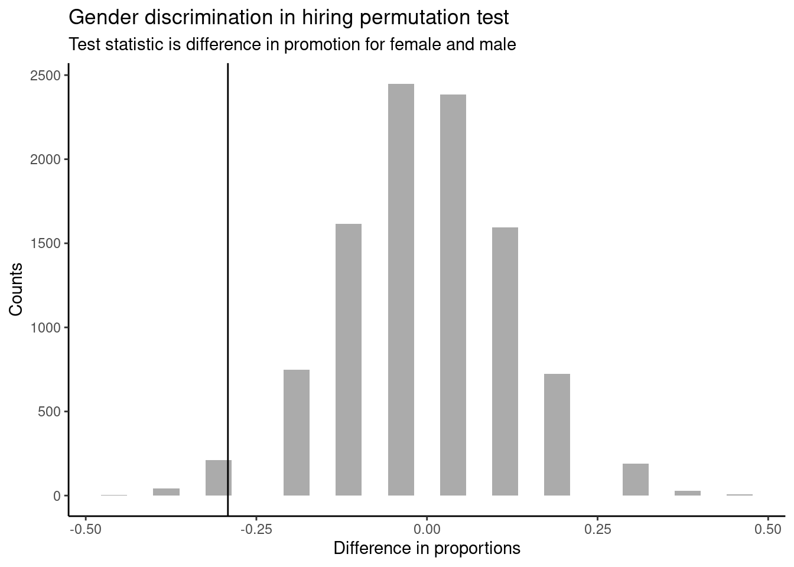

discrim <- read_csv("data/discrimination_study.csv")18 Inferential Thinking Case Study
18.1 Objectives
Define and use properly in context all new terminology, to include: point estimate, null hypothesis, alternative hypothesis, hypothesis test, randomization, permutation test, test statistic, and \(p\)-value.
Conduct a hypothesis test using a randomization test, to include all 4 steps.
18.2 Introduction
We now have the foundation to move on to statistical modeling, both inferential and prediction. First we will begin with inference, where we use the ideas of estimation and the variance of estimates to make decisions about the population. We will also briefly introduce the ideas of prediction. Then in the final block of material, we will examine some common linear models and use them for both prediction and inference.
18.3 Foundation for inference
Suppose a professor randomly splits the students in class into two groups: students on the left and students on the right. If \(\hat{p}_{_L}\) and \(\hat{p}_{_R}\) represent the proportion of students who own an Apple product on the left and right, respectively, would you be surprised if \(\hat{p}_{_L}\) did not exactly equal \(\hat{p}_{_R}\)?
While the proportions would probably be close to each other, they are probably not exactly the same. We would probably observe a small difference due to chance.
Exercise:
If we don’t think the side of the room a person sits on in class is related to whether the person owns an Apple product, what assumption are we making about the relationship between these two variables?1
Studying randomness of this form is a key focus of statistical modeling. In this block, we’ll explore this type of randomness in the context of several applications, and we’ll learn new tools and ideas that can be applied to help make decisions from data.
18.4 Randomization case study: gender discrimination
We consider a study investigating gender discrimination in the 1970s, which is set in the context of personnel decisions within a bank.2 The research question we hope to answer is, “Are females discriminated against in promotion decisions made by male managers?”
18.4.1 Variability within data
The participants in this study were 48 male bank supervisors attending a management institute at the University of North Carolina in 1972. They were asked to assume the role of the personnel director of a bank and were given a personnel file to judge whether the person should be promoted to a branch manager position. The files given to the participants were identical, except that half of them indicated the candidate was male and the other half indicated the candidate was female. These files were randomly assigned to the subjects.
Exercise:
Is this an observational study or an experiment? How does the type of study impact what can be inferred from the results?3
For each supervisor, we recorded the gender associated with the assigned file and the promotion decision. Using the results of the study summarized in the table below, we would like to evaluate whether females are unfairly discriminated against in promotion decisions. In this study, a smaller proportion of females are promoted than males (0.583 versus 0.875), but it is unclear whether the difference provides convincing evidence that females are unfairly discriminated against.
\[ \begin{array}{cc|ccc} & & &\textbf{Decision}\\ & & \mbox{Promoted} & \mbox{Not Promoted} & \mbox{Total} \\ & \hline \mbox{male} & 21 & 3 & 24 \\ \textbf{Gender}& \mbox{female} & 14 & 10 & 24 \\ & \mbox{Total} & 35 & 13 & 48 \\ \end{array} \]
Thought Question:
Statisticians are sometimes called upon to evaluate the strength of evidence. When looking at the rates of promotion for males and females in this study, why might we be tempted to immediately conclude that females are being discriminated against?
The large difference in promotion rates (58.3% for females versus 87.5% for males) suggest there might be discrimination against women in promotion decisions. Most people come to this conclusion because they think these sample statistics are the actual population parameters. We cannot yet be sure if the observed difference represents discrimination or is just from random variability. Generally, there is fluctuation in sample data; if we conducted the experiment again, we would likely get different values. We also wouldn’t expect the sample proportions for males and females to be exactly equal, even if the truth was that the promotion decisions were independent of gender. To make a decision, we must understand the random variability and use it to compare with the observed difference.
This question is a reminder that the observed outcomes in the sample may not perfectly reflect the true relationships between variables in the underlying population. The table shows there were 7 fewer promotions in the female group than in the male group, a difference in promotion rates of 29.2% \(\left( \frac{21}{24} - \frac{14}{24} = 0.292 \right)\). This observed difference is what we call a point estimate of the true effect. The point estimate of the difference is large, but the sample size for the study is small, making it unclear if this observed difference represents discrimination or whether it is simply due to chance.
What would it mean if the null hypothesis, which says the variables gender and decision are unrelated, is true? It would mean each banker would decide whether to promote the candidate without regard to the gender indicated on the file. That is, the difference in the promotion percentages would be due to the way the files were randomly divided to the bankers, and the randomization just happened to give rise to a relatively large difference of 29.2%.
Consider the alternative hypothesis: bankers were influenced by which gender was listed on the personnel file. If this was true, and especially if this influence was substantial, we would expect to see some difference in the promotion rates of male and female candidates. If this gender bias was against females, we would expect a smaller fraction of promotion recommendations for female personnel files relative to the male files.
We will choose between these two competing claims by assessing if the data conflict so much with \(H_0\) that the null hypothesis cannot be deemed reasonable. If this is the case, and the data support \(H_A\), then we will reject the notion of independence and conclude that these data provide strong evidence of discrimination. Again, we will do this by determining how much difference in promotion rates would happen by random variation and compare this with the observed difference. We will make a decision based on probability considerations.
18.4.2 Simulating the study
The table of data shows that 35 bank supervisors recommended promotion and 13 did not. Now, suppose the bankers’ decisions were independent of gender, that is the null hypothesis is true. Then, if we conducted the experiment again with a different random assignment of files, differences in promotion rates would be based only on random fluctuation. We can actually perform this randomization, which simulates what would have happened if the bankers’ decisions had been independent of gender but we had distributed the files differently.4 We will walk through the steps next.
First let’s import the data.
Let’s inspect the data set.
inspect(discrim)
categorical variables:
name class levels n missing
1 gender character 2 48 0
2 decision character 2 48 0
distribution
1 female (50%), male (50%)
2 promoted (72.9%), not_promoted (27.1%) Let’s look at a table of the data, showing gender versus decision.
tally(~gender + decision, discrim, margins = TRUE) decision
gender not_promoted promoted Total
female 10 14 24
male 3 21 24
Total 13 35 48Let’s do some categorical data cleaning. To get the tally() results to look like our initial table, we need to change the variables from characters to factors and reorder the levels. By default, factor levels are ordered alphabetically, but we want promoted and male to appear as the first levels in the table.
We will use mutate_if() to convert character variables to factors and fct_relevel() to reorder the levels.
discrim <- discrim %>%
mutate_if(is.character, as.factor) %>%
mutate(gender = fct_relevel(gender, "male"),
decision = fct_relevel(decision, "promoted"))head(discrim)# A tibble: 6 × 2
gender decision
<fct> <fct>
1 female not_promoted
2 female not_promoted
3 male promoted
4 female promoted
5 female promoted
6 female promoted tally(~gender + decision, discrim, margins = TRUE) decision
gender promoted not_promoted Total
male 21 3 24
female 14 10 24
Total 35 13 48Now that we have the data in the form that we want, we are ready to conduct the permutation test, a simulation of what would have happened if the bankers’ decisions had been independent of gender but we had distributed the files differently. To think about this simulation, imagine we actually had the personnel files. We thoroughly shuffle 48 personnel files, 24 labeled male and 24 labeled female, and deal these files into two stacks. We will deal 35 files into the first stack, which will represent the 35 supervisors who recommended promotion. The second stack will have 13 files, and it will represent the 13 supervisors who recommended against promotion. That is, we keep the same number of files in the promoted and not_promoted categories, and imagine simply shuffling the male and female labels around. Remember that the files are identical except for the listed gender. This simulation then assumes that gender is not important and, thus, we can randomly assign the files to any of the supervisors. Then, as we did with the original data, we tabulate the results and determine the fraction of male and female candidates who were promoted. Since we don’t actually physically have the files, we will do this shuffle via computer code.
Since the randomization of files in this simulation is independent of the promotion decisions, any difference in the two fractions is entirely due to chance. The following code shows the results of such a simulation.
set.seed(101)
tally(~shuffle(gender) + decision, discrim, margins = TRUE) decision
shuffle(gender) promoted not_promoted Total
male 18 6 24
female 17 7 24
Total 35 13 48The shuffle() function randomly rearranges the gender column while keeping the decision column the same. It is really a sampling without replacement. That is, we randomly sample 35 personnel files to be promoted and the other 13 personnel files are not_promoted.
Exercise: What is the difference in promotion rates between the two simulated groups? How does this compare to the observed difference, 29.2%, from the actual study?5
Calculating by hand will not help in a simulation, so we must write a function or use an existing one. We will use diffprop() from the mosaic package. The code to find the difference for the original data is:
(obs <- diffprop(decision ~ gender, data = discrim)) diffprop
-0.2916667 Notice that this is subtracting the proportion of males promoted from the proportion of females promoted. This does not impact our results as this is an arbitrary decision. We just need to be consistent in our analysis. If we prefer to use positive values, we can adjust the order easily.
diffprop(decision ~ fct_relevel(gender, "female"), data = discrim) diffprop
0.2916667 Notice what we have done here; we developed a single value metric to measure the relationship between gender and decision. This single value metric is called the test statistic. We could have used a number of different metrics, to include just the difference in number of promoted males and females. The key idea in hypothesis testing is that once you decide on a test statistic, you need to find the distribution of that test statistic, assuming the null hypothesis is true.
18.4.3 Checking for independence
We computed one possible difference under the null hypothesis in the exercise above, which represents one difference due to chance. Repeating the simulation, we get another difference due to chance: -0.042. And another: 0.208. And so on until we repeat the simulation enough times that we have a good idea of what represents the distribution of differences from chance alone. That is, the difference if there really is no relationship between gender and the promotion decision. We are using a simulation when there is actually a finite number of permutations of the gender label. From Chapter @ref(PROBRULES) on counting, we have 48 labels of which 24 are male and 24 are female. Thus the total number of ways to arrange the labels differently is:
\[ \frac{48!}{24!\cdot24!} \approx 3.2 \cdot 10^{13} \]
factorial(48) / (factorial(24)*factorial(24))[1] 3.22476e+13As is often the case, the number of all possible permutations is too large to find by hand or even via code. Thus, we will use a simulation, a subset of all possible permutations, to approximate the permutation test. Using simulation in this way is called a randomization test.
Let’s simulate the experiment and plot the simulated values of the difference in the proportions of male and female files recommended for promotion.
set.seed(2022)
results <- do(10000)*diffprop(decision ~ shuffle(gender), data = discrim)In Figure @ref(fig:teststat1-fig), we will insert a vertical line at the value of our observed difference.
results %>%
gf_histogram(~diffprop) %>%
gf_vline(xintercept = -0.2916667 ) %>%
gf_theme(theme_classic()) %>%
gf_labs(x = "Difference in proportions", y = "Counts",
title = "Gender discrimination in hiring permutation test",
subtitle = "Test statistic is difference in promotion for female and male")
Note that the distribution of these simulated differences is centered around 0 and is roughly symmetrical. It is centered on zero because we simulated differences in a way that made no distinction between men and women. This makes sense: we should expect differences from chance alone to fall around zero with some random fluctuation for each simulation under the assumption of the null hypothesis. The histogram also looks like a normal distribution; this is not a coincidence, but a result of the Central Limit Theorem, which we will learn about later in this block.
Example:
How often would you observe a difference as extreme as -29.2% (-0.292) according to the figure? (Often, sometimes, rarely, or never?)
It appears that a difference as extreme as -29.2% due to chance alone would only happen rarely. We can estimate the probability using the results object.
results %>%
summarise(p_value = mean(diffprop <= obs)) p_value
1 0.0257In our simulations, only 2.6% of the simulated test statistics were less than or equal to the observed test statistic, as or more extreme relative to the null hypothesis. Such a low probability indicates that observing such a large difference in proportions from chance alone is rare. This probability is known as a \(p\)-value. The \(p\)-value is a conditional probability, the probability of the observed value or more extreme given that the null hypothesis is true.
We could have also found the exact \(p\)-value using the hypergeometric distribution. We have 13 not_promoted positions, so we could have anywhere between 0 and 13 females not promoted. We observed 10 females not promoted. Thus, the exact \(p\)-value from the hypergeometric distribution is the probability of 10 or more females not promoted (as or more extreme than the observed) when we select 13 people from a pool of 24 males and 24 females, and the selection is done without replacement.
1 - phyper(9, 24, 24, 13)[1] 0.02449571Again, we see a low probability, only 2.4%, of observing 10 or more females not promoted, given that the null hypothesis is true.
The observed difference of -29.2% is a rare (low probability) event if there truly is no impact from listing gender in the personnel files. This provides us with two possible interpretations of the study results, in context of our hypotheses:
\(H_0\): Null hypothesis. Gender has no effect on promotion decision, and we observed a difference that is so large that it would only happen rarely.
\(H_A\): Alternative hypothesis. Gender has an effect on promotion decision, and what we observed was actually due to equally qualified women being discriminated against in promotion decisions, which explains the large difference of -29.2%.
When we conduct formal studies, we reject a skeptical position (\(H_0\)) if the data strongly conflict with that position.6
In our analysis, we determined that there was only a ~ 2% probability of obtaining a test statistic where the difference between female and male promotion proportions was 29.2% or larger assuming gender had no impact. So we conclude the data provide sufficient evidence of gender discrimination against women by the supervisors. In this case, we reject the null hypothesis in favor of the alternative hypothesis.
Statistical inference is the practice of making decisions and conclusions from data in the context of uncertainty. Errors do occur, just like rare events, and the data set at hand might lead us to the wrong conclusion. While a given data set may not always lead us to a correct conclusion, statistical inference gives us tools to control and evaluate how often these errors occur.
Let’s summarize what we did in this case study. We had a research question and some data to test the question. We then performed 4 steps:
- State the null and alternative hypotheses.
- Compute a test statistic.
- Determine the \(p\)-value.
- Draw a conclusion.
We decided to use a randomization test, a simulation, to answer the question. When creating a randomization distribution, we attempted to satisfy 3 guiding principles.
- Be consistent with the null hypothesis.
We need to simulate a world in which the null hypothesis is true. If we don’t do this, we won’t be testing our null hypothesis. In our problem, we assumed gender and promotion were independent.
- Use the data in the original sample.
The original data should shed light on some aspects of the distribution that are not determined by the null hypothesis. For our problem, we used the difference in promotion rates. The data does not give us the distribution direction, but it gives us an idea that there is a large difference.
- Reflect the way the original data were collected.
There were 48 files and 48 supervisors. A total of 35 files were recommended for promotion. We keep this the same in our simulation.
The remainder of this block expands on the ideas of this case study.
We would be assuming that these two variables, side of the room and use of Apple product, are independent, meaning they are unrelated.↩︎
Rosen B and Jerdee T. 1974. “Influence of sex role stereotypes on personnel decisions.” Journal of Applied Psychology 59(1):9-14.↩︎
The study is an experiment, as subjects were randomly assigned a male personnel file or a female personnel file. Since this is an experiment, the results can be used to evaluate a causal relationship between gender of a candidate and the promotion decision.↩︎
The test procedure we employ in this section is formally called a permutation test.↩︎
\(18/24 - 17/24 = 0.042\) or about 4.2% in favor of the men. This difference due to chance is much smaller than the difference observed in the actual groups.↩︎
This reasoning does not generally extend to anecdotal observations. Each of us observes incredibly rare events every day, events we could not possibly hope to predict. However, in the non-rigorous setting of anecdotal evidence, almost anything may appear to be a rare event, so the idea of looking for rare events in day-to-day activities is treacherous. For example, we might look at the lottery: there was only a 1 in 176 million chance that the Mega Millions numbers for the largest jackpot in history (March 30, 2012) would be (2, 4, 23, 38, 46) with a Mega ball of (23), but nonetheless those numbers came up! However, no matter what numbers had turned up, they would have had the same incredibly rare odds. That is, any set of numbers we could have observed would ultimately be incredibly rare. This type of situation is typical of our daily lives: each possible event in itself seems incredibly rare, but if we consider every alternative, those outcomes are also incredibly rare. We should be cautious not to misinterpret such anecdotal evidence.↩︎